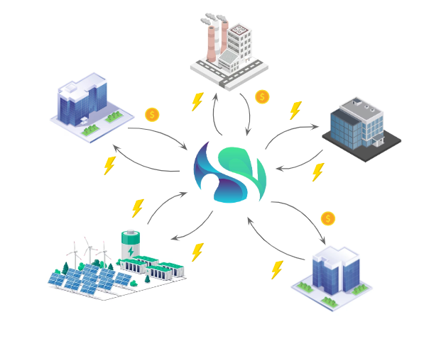

- Move from fossil fuels to renewable energy
- Increasing energy consumption
- Energy Hubs
- Local collaborations with peers
Our Solutions
Addressing the critical challenges in the energy sector and providing innovative solutions.
The Challenge We Are Facing
Arising Issues
- Overloaded and unbalanced energy grids
- Net congestion
- Uncertainty on energy provision
- Energy surpluses going to waste
- Developments halted by regulations

(Source: Netbeheer Nederland)

(Source: Netbeheer Nederland)
The Problem We Are Solving
Industrial companies face challenges in energy exchange due to regulatory measures, lack of appropriate software, and restrictions placed by energy providers and operators. This creates risks for core business activities, missed opportunities in energy savings, and limits the effective utilization of energy surpluses.
Our Solution

Introducing a peer-to-peer energy exchange platform designed to optimize energy circulations:
- Automatically exchanges energy among peers
- Optimally distributes energy supply using AI for efficiency gains between 10-20%
- Retains energy locally and ensures reliable energy streams
- Innovative energy exchange methods
- Offered as Software as a Service (SaaS)